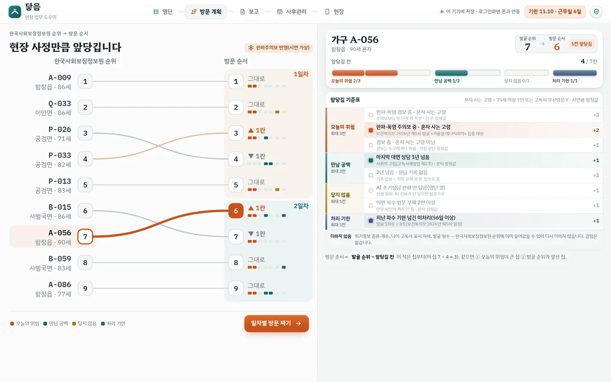
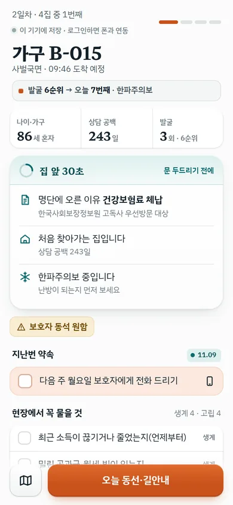
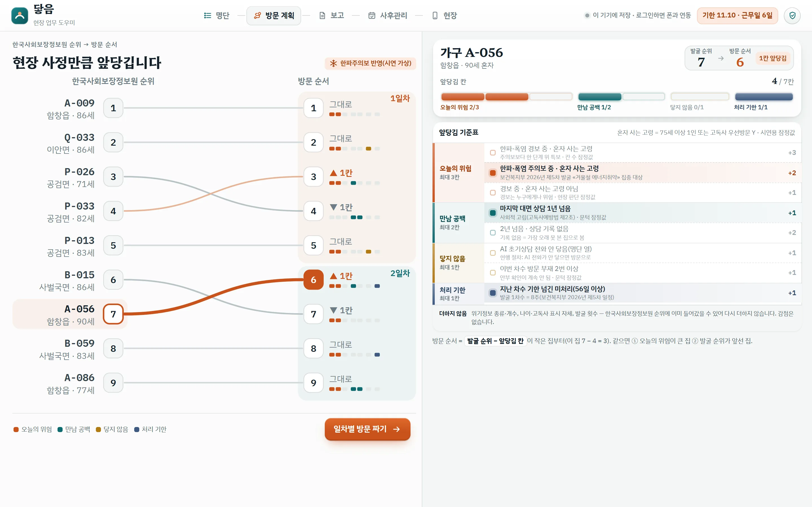
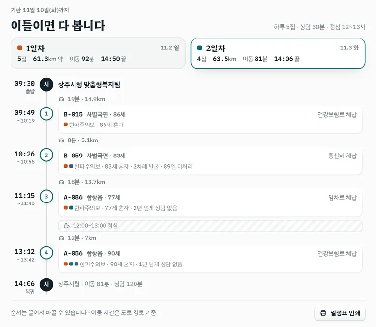
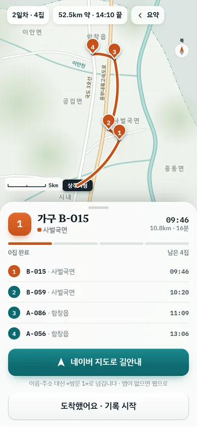
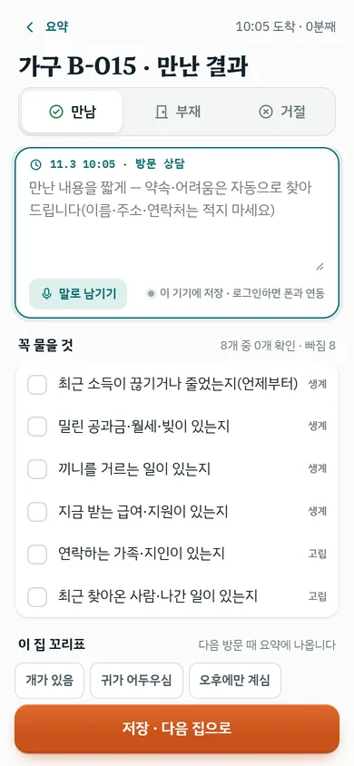
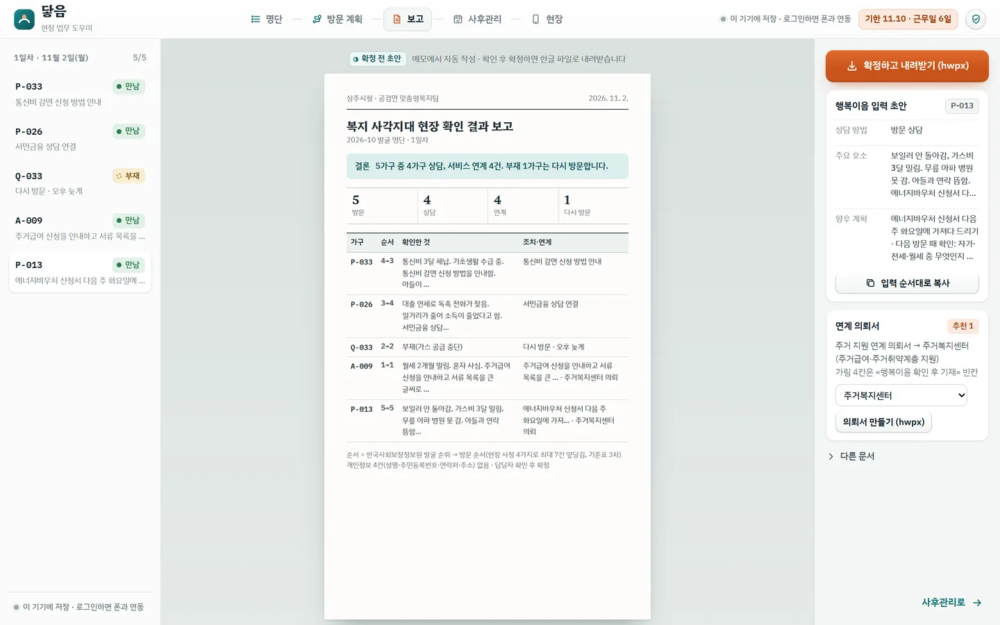
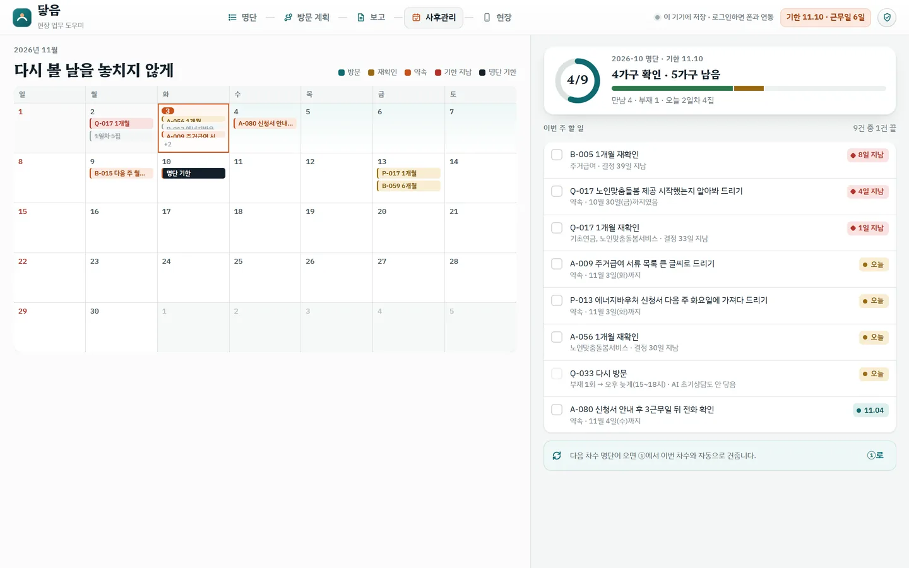

상주시청 적용 예시 · 복지 담당 공무원 전용
발굴 명단을 받은 날부터 집 앞 방문을 지나, 보고서까지 한 흐름으로.
한국사회보장정보원 발굴 명단 이후의 현장 업무 — 처리 기한, 방문 순서, 현장 메모, 결재 보고, 사후관리를 하나로 잇습니다. 같은 계정이면 사무실 PC와 현장 폰이 실시간으로 맞춰집니다.
- 사무실 PC
- 명단 · 기한 · 우선순위 · 일차별 방문 · 보고 · 사후관리①②③④ → ⑧⑨ · 이음 엑셀 그대로 불러오기, 한글 결재 양식
- 현장 폰
- 집 앞 요약 · 길안내 · 확인과 메모⑤⑥⑦ · 네이버 지도 길안내, AI 메모 초안 → 공무원 확정
바로 체험하기
로그인 없이 시연 모드 · 가구는 모두 가상

PC · ③ 우선순위 근거
폰 · ⑤ 집 앞 요약같은 계정 · PC↔폰 실시간 연동
이음 엑셀 그대로PC ①조회 서식 43열을 새로 입력하지 않고 불러오기 · 브라우저 안에서만 읽음
처리 기한 · 근무일PC ②차수 기한까지 남은 근무일과 하루 방문 수
«N순위 → 오늘 M번째»PC ③한국사회보장정보원 순위는 그대로, 앞당긴 이유만 덧붙임
읍면 묶음 일차별 방문PC ④기한 안에 며칠이면 다 볼지, 순서는 끌어서 바꾸기
현장 메모 AI 초안폰 ⑦쟁점·욕구·연계 후보 초안 → 공무원이 고치고 «확정»
결재 보고서 · 사후관리PC ⑧⑨한글 결재 양식 자동 생성, 다시 볼 날까지
01 · 한 흐름
사무실에서 현장으로, 다시 사무실로
명단 한 장에서 사후관리까지 아홉 단계. 계획과 보고는 PC에서, 방문은 폰에서 합니다.
사무실 PC · 계획
- 1명단 불러오기이음 엑셀 43열
- 2처리 기한남은 근무일
- 3우선순위순위 − 앞당김 칸
- 4일차별 방문읍면끼리 묶기
현장 폰 · 방문
- 5집 앞 요약30초
- 6길안내네이버 지도
- 7확인 · 메모AI 초안 → 확정
다시 PC · 보고
- 8보고서한글 결재 양식
- 9사후관리재확인 날짜
같은 계정으로 로그인하면 PC에서 확정한 방문 계획이 폰에, 폰에서 남긴 메모가 PC 보고서에 바로 나타납니다.
02 · PC ③ 우선순위
오늘 어디를, 왜 먼저
한국사회보장정보원 발굴 순위를 지우지 않고, 현장 사정만큼 앞당긴 칸과 그 이유를 함께 보여 줍니다.
우선순위 근거 화면
- 1발굴 순위는 그대로 둡니다왼쪽 한국사회보장정보원 순위에서 오른쪽 방문 순서로. 자리를 옮긴 집만 선이 휩니다.
- 2앞당긴 칸과 이유를 한 줄로«발굴 7순위 → 오늘 6번째». 오늘의 위험 · 만남 공백 · 닿지 않음 · 처리 기한, 최대 7칸.
- 3같은 이유는 두 번 더하지 않습니다순위에 이미 든 위기정보는 다시 더하지 않고, 기준표는 화면에 늘 펼쳐 둡니다.

1 2 31
발굴 순위는 그대로 둡니다자리를 옮긴 집만 선이 휩니다.
2
앞당긴 칸과 이유를 한 줄로오늘의 위험 · 만남 공백 · 닿지 않음 · 처리 기한, 최대 7칸.
3
같은 이유는 두 번 더하지 않습니다순위에 이미 든 위기정보는 다시 더하지 않습니다.
03 · PC ④ 일차별 방문
기한 안에, 며칠이면 다 볼까
하루 방문 수와 상담 시간, 점심시간을 넣으면 읍면끼리 묶어 일차를 나눕니다.
- 도착 시각까지 나옵니다출발 → 집마다 도착·상담 → 복귀, 이동 시간은 도로 경로 기준.
- 순서는 끌어서 바꿉니다현장 사정이 바뀌면 손으로 옮기고, 시각은 다시 계산됩니다.
- 확정하면 폰에 나타납니다같은 계정 폰의 «오늘 동선»으로 바로 이어집니다.
48.3%
이동 거리 감소 · 시연 9곳, 직선×1.3 추정, 가상 가구

시연 모드 · 가상 가구04 · 현장 폰 ⑤⑥⑦
집 앞에서 30초, 나올 때 메모 한 번
문 두드리기 전에 볼 것, 가는 길, 만난 결과까지 폰 한 손으로.
5집 앞 요약명단에 오른 이유, 지난번 약속, 꼭 물을 것.

6동선 · 길안내오늘 갈 집을 지도에 잇고, 네이버 지도로 바로 길안내.

7확인 · 메모만남·부재·거절, 말로 남긴 메모, 꼭 물을 것 확인.
AI는 메모 초안까지, 확정은 공무원이
- 1개인정보 가림
- 2규칙이 후보 50건 추림
- 3AI가 고르고 이유
- 4목록 밖 답 버림
19~20/20
첫 추천 적합 · 상위 3개 54/60 · 목록 밖 서비스 0건
가상 사연 20건 측정 · 규칙만 쓸 때 14/20
05 · PC ⑧⑨
메모가 모이면 보고서, 그다음은 다시 볼 날
현장 메모가 결재 양식 보고서로 모이고, 재확인 날짜까지 한 화면에 남습니다.

시연 모드 · 가상 가구
시연 모드 · 가상 가구06 · 데이터와 숫자
공공데이터로, 지금 동작하는 그대로
한국사회보장정보원 공공데이터 3종과 보조 4기관 7종. 시연 가구는 모두 가상입니다.
43열발굴대상자 조회 서식한국사회보장정보원 서식 그대로 불러오기
369건복지서비스 OpenAPI중앙 351 + 경북 13 · 상주 5 · 연계 후보·AI 추천 목록
19~20/20첫 추천 적합가상 사연 20건 · 목록 밖 0건
48.3%추정방문 이동 거리 감소시연 9곳 127.3 → 65.8km · 직선×1.3
227곳전국 시군구 적용같은 서식·공공데이터라 어느 시군이든
약 45원추정AI 1회 비용사용량 과금 · 한도 초과 시 규칙 초안으로 전환
직접 눌러 보세요
로그인 없이 시연 모드로 열립니다. 명단·가구는 모두 가상입니다.
https://hcyang572-gif.github.io/daeum/officer/